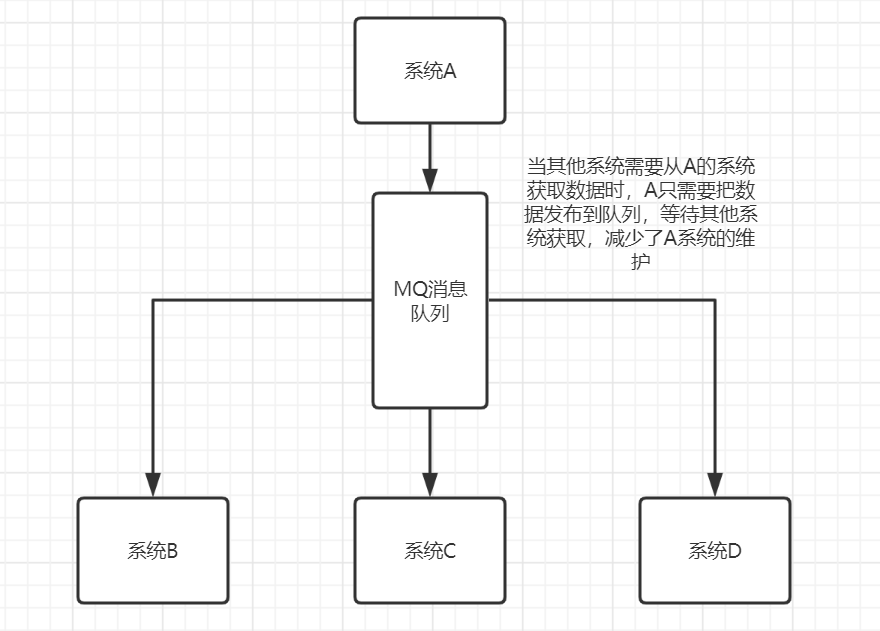
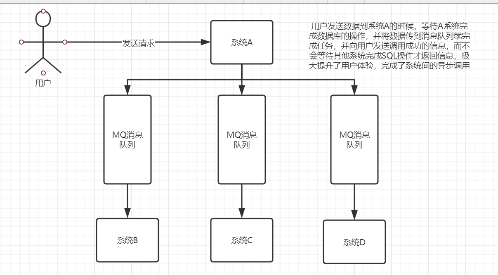
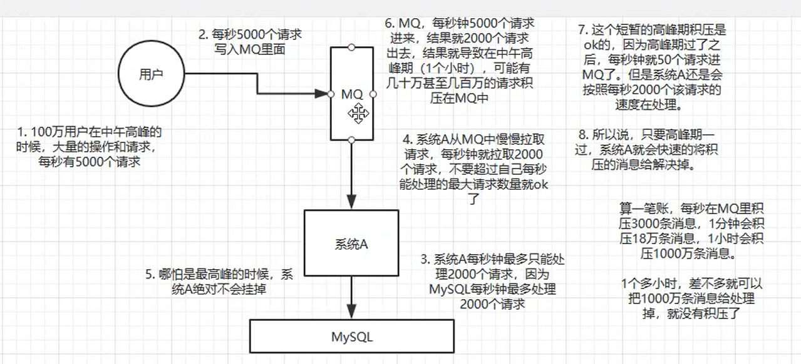
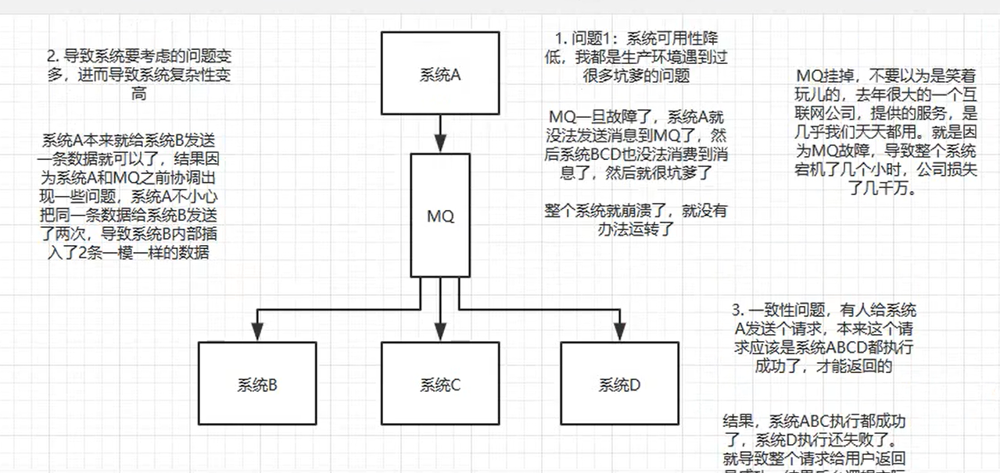

消息队列的选型
消息队列的应用场景（为什么要用消息队列）
让各个系统之间的接口调用进行解耦，减少发布接口系统修改代码的压力

让各个系统之间的运行得以异步调用，减少等待的时间

对高并发的场景进行削峰

消息队列带来的问题
消息队列的宕机导致各个系统间无法正常调用
消息队列中的消息丢失问题
消息队列中的积压问题
消息队列出现消息重复多次的问题
消息队列调用顺序的问题等等
出现部分系统运行成功，部分系统运行失败带来的一致性问题

消息队列的选型
各个消息队列的对比：
| 特性 | ActiveMQ | RabbitMQ | RocketMQ | Kfaka |
|---|---|---|---|---|
| 单机吞吐量 | 玩级，比Rocket MQ，Kafka低一个数量级 | 同 ActiveMQ | 10 万级，支撑高吞吐 | 10 万级，高吞吐，一般配合大数据类的系统来进行实时数据计算、日志采集等场景 |
| topic数量对吞吐量的影响 | topic 可以达到几百/几千的级别，吞吐量会有较小幅度的下降，这是 RocketMQ 的一大优势，在同等机器下，可以支撑大量的 topic | topic 从几十到几百个时候，吞吐量会大幅度下降，在同等机器下，Kafka 尽量保证 topic 数量不要过多，如果要支撑大规模的 topic，需要增加更多的机器资源 | ||
| 时效性 | 毫秒级 | 微秒级，这是 RabbitMQ 的一大特点，延迟最低 | 毫秒级 | 延迟在 ms 级以内 |
| 可用性 | 高，基于主从架构实现，高可用 | 同 ActiveMQ | 非常高，分布式架构 | 非常高，分布式，一个数据多个副本，少数机器宕机，不会丢失数据，不会导致不可用 |
| 消息可靠性 | 有较低的概率丢失数据 | 基本不丢 | 经过参数优化配置，可以做到 0 丢失 | 同 RocketMQ |
| 功能支持 | MQ领域功能完备 | 基于 erlang 开发，并发能力很强，性能极好，延时很低 | MQ 功能较为完善，还是分布式的，扩展性好 | 功能较为简单，主要支持简单的 MQ 功能，在大数据领域的实时计算以及日志采集被大规模使用 |
综上，各种对比之后，有如下建议：
一般的业务系统要引入 MQ，最早大家都用 ActiveMQ，但是现在确实大家用的不多了，没经过大规模吞吐量场景的验证，社区也不是很活跃，所以大家还是算了吧，我个人不推荐用这个了；
后来大家开始用 RabbitMQ，但是确实 erlang 语言阻止了大量的 Java 工程师去深入研究和掌控它，对公司而言，几乎处于不可控的状态，但是确实人家是开源的，比较稳定的支持，活跃度也高；
不过现在确实越来越多的公司会去用 RocketMQ，确实很不错，毕竟是阿里出品，但社区可能有突然黄掉的风险（目前 RocketMQ 已捐给 Apache，但 GitHub 上的活跃度其实不算高）对自己公司技术实力有绝对自信的，推荐用 RocketMQ，否则回去老老实实用 RabbitMQ 吧，人家有活跃的开源社区，绝对不会黄。
所以中小型公司，技术实力较为一般，技术挑战不是特别高，用 RabbitMQ 是不错的选择；大型公司，基础架构研发实力较强，用 RocketMQ 是很好的选择。
如果是大数据领域的实时计算、日志采集等场景，用 Kafka 是业内标准的，绝对没问题，社区活跃度很高，绝对不会黄，何况几乎是全世界这个领域的事实性规范。